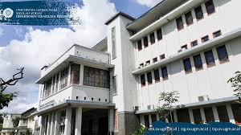
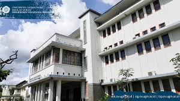

Alamat: Sekip Unit 1, Blimbing Sari, Caturtunggal, Kec. Depok, Kabupaten Sleman, Daerah Istimewa Yogyakarta 55281
Telepon: (0274) 541020
FAX: (0274) 541020
E-mail: sv@ugm.ac.id
Website: https://sv.ugm.ac.id
Sekolah Vokasi
Sekolah Vokasi (SV) UGM adalah salah satu dari 18 fakultas di UGM yang menyelenggarakan program sarjana terapan. SV UGM adalah pendidikan tinggi vokasi seperti politeknik, yang berada di dalam tata kelola Universitas Gadjah Mada (UGM). SV UGM memiliki keunggulan dibandingkan pendidikan tinggi vokasi yang lainnya.
Visi dan misi UGM memberikan karakter pada sistem pembelajaran dengan mekanisme sistem penjaminan mutu internal yang berkualitas, sehingga mampu menghasilkan lulusan yang dibutuhkan oleh dunia kerja/industri.
Posisi strategis dan potensi SV UGM telah banyak menarik partner kerja sama, baik dari dalam maupun luar negeri. Kemitraan SV UGM berlandaskan pada asas tri darma meliputi Pendidikan, Penelitian dan Pengabdian Masyarakat. Partner kerja sama SV UGM meliputi sektor pemerintah dan swasta. Saat ini, SV UGM memberi kesempatan kepada para partner baru untuk berkolaborasi menyiapkan sumber daya manusia (SDM) yang kompeten mengembangkan daerah dan sektor industri.